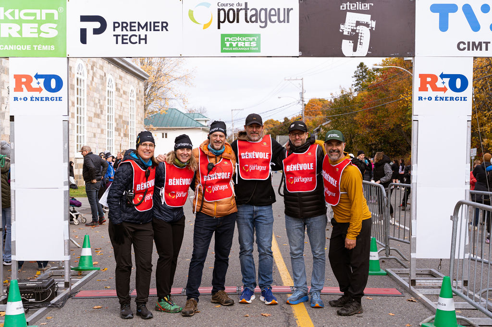

Bénévoles 2025

Devenir partenaire
Soutenir la course.
Envie d'associer votre entreprise à un évènement sportif et familial ancré dans le Bas-Saint-Laurent depuis des années ? Écrivez-nous — on discute ensemble de ce qui fait sens.
Des visibilités existent pour tous les budgets, du kilomètre sponsorisé à la bannière à l'arche d'arrivée.
Nous écrire ↗